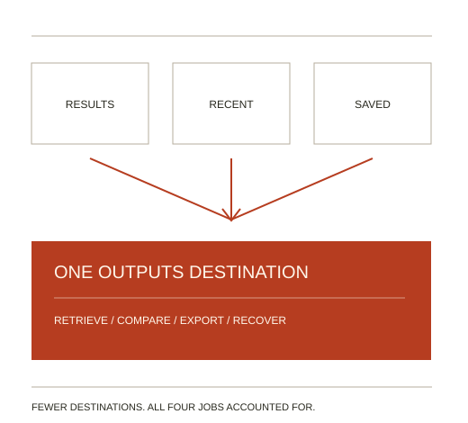

01
Map the Jobs
Separate frequency from criticality. Low usage alone is not evidence of low value.
Product Simplification · 02
What can disappear without taking something important with it? Shatterstar makes the case for subtraction—and the case for keeping what matters.

Products grow. Three screens end up doing the work of one. Settings pile up. The first-time setup asks too many questions.
Cutting things sounds simple. But a feature few people use can still matter a great deal, such as a rare action that cannot be skipped.
Shatterstar is a skill: a folder of instructions you add to an AI agent. It helps a team decide what to remove, combine, hide or put off. It starts from the tasks people must still be able to do.
You get ranked proposals, a check that each important task still works, the costs of each change and a plan to test it or undo it. Each proposal is compared with leaving the design alone or just making it clearer.
Example. In the project’s made-up example, three lists of outputs could become one page with filters, but only if finding, comparing, exporting and retrying still work. A gentler option is also offered: group the three links and change nothing else.
The Decision
Compare removal, merging, hiding and deferral with keeping or clarifying the current design. Check which option preserves the task with less burden.
Separate frequency from criticality. Low usage alone is not evidence of low value.
Name the burden removed—and the burden shifted to memory, navigation, support or migration.
Propose a reversible experiment, falsifiable criteria and a rollback plan before implementation.
Combine overlapping output lists only if retrieval, comparison, export and recovery all retain a clear path.
Inspect the Preserved-Task Matrix →Latest, recent and pinned outputs; authorized export; comparison; safe retry. Existing links and keyboard paths need verification.
Consolidation may add navigation, disrupt familiar entry points or make side-by-side comparison harder. A grouped set of existing links is a conservative alternative.
Keep the feature until critical tasks, integration dependencies and permissions are accounted for.
Explore subtraction, feature fatigue, information foraging and accessibility to understand where simplification helps and which tasks need protection. Explore the Research.
Hex Men is a directory of independent projects by Jon Gosier. Each project stands on its own; these are its members.